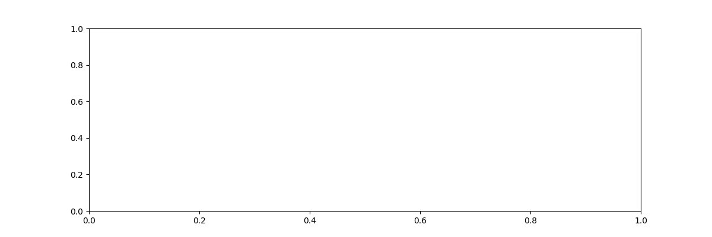

Note
Go to the end to download the full example code.
Optimization with onnxruntime¶
onnxruntime optimizes the onnx graph by default before running the inference. It modifies, fuses or add new operators. Some of them are standard onnx operators, some of them are implemented in onnxruntime (see Supported Operators). This example looks into the differences of two models.
Optimize a model with onnxruntime¶
import os
from pprint import pprint
import numpy
from pandas import DataFrame
import matplotlib.pyplot as plt
from onnx import load
from onnx_array_api.ext_test_case import example_path
from onnx_array_api.plotting.text_plot import onnx_simple_text_plot
from onnx_array_api.validation.diff import text_diff, html_diff
from onnxruntime import GraphOptimizationLevel, InferenceSession, SessionOptions
from onnx_array_api.ext_test_case import measure_time
from onnx_array_api.ort.ort_optimizers import ort_optimized_model
filename = example_path("data/small.onnx")
optimized = filename + ".optimized.onnx"
if not os.path.exists(optimized):
ort_optimized_model(filename, output=optimized)
print(optimized)
data/small.onnx.optimized.onnx
Output comparison¶
so = SessionOptions()
so.graph_optimization_level = GraphOptimizationLevel.ORT_ENABLE_ALL
img = numpy.random.random((1, 3, 112, 112)).astype(numpy.float32)
sess = InferenceSession(filename, so, providers=["CPUExecutionProvider"])
sess_opt = InferenceSession(optimized, so, providers=["CPUExecutionProvider"])
input_name = sess.get_inputs()[0].name
out = sess.run(None, {input_name: img})[0]
out_opt = sess_opt.run(None, {input_name: img})[0]
if out.shape != out_opt.shape:
print("ERROR shape are different {out.shape} != {out_opt.shape}")
diff = numpy.abs(out - out_opt).max()
print(f"Differences: {diff}")
Differences: 0.0
Difference¶
Unoptimized model.
first model to text...
opset: domain='' version=11
input: name='input' type=dtype('float32') shape=['None', 3, 112, 112]
init: name='i0' type=dtype('float32') shape=(64,)
init: name='i1' type=dtype('float32') shape=(64,)
init: name='i2' type=dtype('float32') shape=(64,)
init: name='i3' type=dtype('float32') shape=(64,)
init: name='i4' type=dtype('float32') shape=(1, 2, 7, 7)
init: name='i5' type=dtype('float32') shape=(64, 3, 3, 3)
init: name='i6' type=dtype('float32') shape=(64,)
init: name='i7' type=dtype('float32') shape=(64, 64, 3, 3)
init: name='i8' type=dtype('float32') shape=(64,)
init: name='i9' type=dtype('float32') shape=(64, 64, 3, 3)
init: name='i10' type=dtype('float32') shape=(64,)
init: name='i11' type=dtype('float32') shape=(64, 64, 1, 1)
init: name='i12' type=dtype('float32') shape=(64,)
init: name='i13' type=dtype('float32') shape=(64, 1, 1)
init: name='i14' type=dtype('float32') shape=(64, 1, 1)
Conv(input, i5, i6, dilations=[1,1], group=1, kernel_shape=[3,3], pads=[1,1,1,1], strides=[1,1]) -> r0
PRelu(r0, i13) -> r1
ReduceMean(r1, axes=[1], keepdims=1) -> r2
ReduceMax(r1, axes=[1], keepdims=1) -> r3
Concat(r2, r3, axis=1) -> r4
Conv(r4, i4, dilations=[1,1], group=1, kernel_shape=[7,7], pads=[3,3,3,3], strides=[1,1]) -> r5
Sigmoid(r5) -> r6
Mul(r6, r1) -> r7
BatchNormalization(r7, i0, i1, i2, i3, epsilon=0.00, momentum=0.90) -> r8
Conv(r8, i7, i8, dilations=[1,1], group=1, kernel_shape=[3,3], pads=[1,1,1,1], strides=[1,1]) -> r9
PRelu(r9, i14) -> r10
Conv(r10, i9, i10, dilations=[1,1], group=1, kernel_shape=[3,3], pads=[1,1,1,1], strides=[2,2]) -> r11
Conv(r7, i11, i12, dilations=[1,1], group=1, kernel_shape=[1,1], pads=[0,0,0,0], strides=[2,2]) -> r12
Add(r11, r12) -> onnx::BatchNormalization_1830
output: name='onnx::BatchNormalization_1830' type=dtype('float32') shape=['None', 64, 56, 56]
Optimized model.
second model to text...
opset: domain='' version=11
opset: domain='ai.onnx.ml' version=5
opset: domain='ai.onnx.training' version=1
opset: domain='ai.onnx.preview.training' version=1
opset: domain='com.microsoft' version=1
opset: domain='com.microsoft.experimental' version=1
opset: domain='com.microsoft.nchwc' version=1
opset: domain='org.pytorch.aten' version=1
input: name='input' type=dtype('float32') shape=['None', 3, 112, 112]
init: name='i0' type=dtype('float32') shape=(64,)
init: name='i1' type=dtype('float32') shape=(64,)
init: name='i2' type=dtype('float32') shape=(64,)
init: name='i3' type=dtype('float32') shape=(64,)
init: name='reorder_token_10' type=dtype('float32') shape=(64, 64, 3, 3)
init: name='reorder_token_6' type=dtype('float32') shape=(64, 64, 3, 3)
init: name='i6' type=dtype('float32') shape=(64,)
init: name='reorder_token_1' type=dtype('float32') shape=(8, 2, 7, 7)
init: name='i8' type=dtype('float32') shape=(64,)
init: name='reorder' type=dtype('float32') shape=(64, 3, 3, 3)
init: name='i10' type=dtype('float32') shape=(64,)
init: name='reorder_token_3' type=dtype('float32') shape=(64, 64, 1, 1)
init: name='i12' type=dtype('float32') shape=(64,)
init: name='i13' type=dtype('float32') shape=(64, 1, 1)
init: name='i14' type=dtype('float32') shape=(64, 1, 1)
Conv[com.microsoft.nchwc](input, reorder, i6, auto_pad=b'NOTSET', dilations=[1,1], group=1, strides=[1,1], kernel_shape=[3,3], pads=[1,1,1,1]) -> reorder_token_0
ReorderOutput[com.microsoft.nchwc](reorder_token_0, channels_last=0, channels=64) -> r0
PRelu(r0, i13) -> r1
ReduceMax(r1, keepdims=1, axes=[1]) -> r3
ReduceMean(r1, keepdims=1, axes=[1]) -> r2
Concat(r2, r3, axis=1) -> r4
Conv[com.microsoft.nchwc](r4, reorder_token_1, activation=b'Sigmoid', auto_pad=b'NOTSET', dilations=[1,1], group=1, strides=[1,1], kernel_shape=[7,7], pads=[3,3,3,3]) -> reorder_token_2
ReorderOutput[com.microsoft.nchwc](reorder_token_2, channels_last=0, channels=1) -> r6
Mul(r6, r1) -> r7
BatchNormalization(r7, i0, i1, i2, i3, momentum=0.90, epsilon=0.00) -> r8
ReorderInput[com.microsoft.nchwc](r8, channels_last=0) -> reorder_token_7
Conv[com.microsoft.nchwc](reorder_token_7, reorder_token_6, i8, auto_pad=b'NOTSET', dilations=[1,1], group=1, strides=[1,1], kernel_shape=[3,3], pads=[1,1,1,1]) -> reorder_token_9
ReorderOutput[com.microsoft.nchwc](reorder_token_9, channels_last=0, channels=64) -> r9
PRelu(r9, i14) -> r10
ReorderInput[com.microsoft.nchwc](r10, channels_last=0) -> reorder_token_11
ReorderInput[com.microsoft.nchwc](r7, channels_last=0) -> reorder_token_4
Conv[com.microsoft.nchwc](reorder_token_4, reorder_token_3, i12, auto_pad=b'NOTSET', dilations=[1,1], group=1, strides=[2,2], kernel_shape=[1,1], pads=[0,0,0,0]) -> reorder_token_5
Conv[com.microsoft.nchwc](reorder_token_11, reorder_token_10, i10, reorder_token_5, auto_pad=b'NOTSET', dilations=[1,1], group=1, strides=[2,2], kernel_shape=[3,3], pads=[1,1,1,1]) -> reorder_token_13
ReorderOutput[com.microsoft.nchwc](reorder_token_13, channels_last=0, channels=64) -> onnx::BatchNormalization_1830
output: name='onnx::BatchNormalization_1830' type=dtype('float32') shape=['None', 64, 56, 56]
Differences
differences...
opset: domain='' version=11
+ opset: domain='ai.onnx.ml' version=5
+ opset: domain='ai.onnx.training' version=1
+ opset: domain='ai.onnx.preview.training' version=1
+ opset: domain='com.microsoft' version=1
+ opset: domain='com.microsoft.experimental' version=1
+ opset: domain='com.microsoft.nchwc' version=1
+ opset: domain='org.pytorch.aten' version=1
input: name='input' type=dtype('float32') shape=['None', 3, 112, 112]
init: name='i0' type=dtype('float32') shape=(64,)
init: name='i1' type=dtype('float32') shape=(64,)
init: name='i2' type=dtype('float32') shape=(64,)
init: name='i3' type=dtype('float32') shape=(64,)
- init: name='i4' type=dtype('float32') shape=(1, 2, 7, 7)
? ^^ ^ ^ ^ ^
+ init: name='reorder_token_10' type=dtype('float32') shape=(64, 64, 3, 3)
? ^^^^^^^^^^^^^^^^ ^^ ^^ ^ ^
- init: name='i5' type=dtype('float32') shape=(64, 3, 3, 3)
? ^^ ^
+ init: name='reorder_token_6' type=dtype('float32') shape=(64, 64, 3, 3)
? ^^^^^^^^^^^^^^^ ^^
init: name='i6' type=dtype('float32') shape=(64,)
- init: name='i7' type=dtype('float32') shape=(64, 64, 3, 3)
? ^^ ^^ ^^ ^ ^
+ init: name='reorder_token_1' type=dtype('float32') shape=(8, 2, 7, 7)
? ^^^^^^^^^^^^^^^ ^ ^ ^ ^
init: name='i8' type=dtype('float32') shape=(64,)
- init: name='i9' type=dtype('float32') shape=(64, 64, 3, 3)
? ^^ ^^
+ init: name='reorder' type=dtype('float32') shape=(64, 3, 3, 3)
? ^^^^^^^ ^
init: name='i10' type=dtype('float32') shape=(64,)
- init: name='i11' type=dtype('float32') shape=(64, 64, 1, 1)
? ^^^
+ init: name='reorder_token_3' type=dtype('float32') shape=(64, 64, 1, 1)
? ^^^^^^^^^^^^^^^
init: name='i12' type=dtype('float32') shape=(64,)
init: name='i13' type=dtype('float32') shape=(64, 1, 1)
init: name='i14' type=dtype('float32') shape=(64, 1, 1)
- Conv(input, i5, i6, dilations=[1,1], group=1, kernel_shape=[3,3], pads=[1,1,1,1], strides=[1,1]) -> r0
+ Conv[com.microsoft.nchwc](input, reorder, i6, auto_pad=b'NOTSET', dilations=[1,1], group=1, strides=[1,1], kernel_shape=[3,3], pads=[1,1,1,1]) -> reorder_token_0
+ ReorderOutput[com.microsoft.nchwc](reorder_token_0, channels_last=0, channels=64) -> r0
PRelu(r0, i13) -> r1
+ ReduceMax(r1, keepdims=1, axes=[1]) -> r3
- ReduceMean(r1, axes=[1], keepdims=1) -> r2
? ----------
+ ReduceMean(r1, keepdims=1, axes=[1]) -> r2
? ++++++++++
- ReduceMax(r1, axes=[1], keepdims=1) -> r3
Concat(r2, r3, axis=1) -> r4
- Conv(r4, i4, dilations=[1,1], group=1, kernel_shape=[7,7], pads=[3,3,3,3], strides=[1,1]) -> r5
- Sigmoid(r5) -> r6
+ Conv[com.microsoft.nchwc](r4, reorder_token_1, activation=b'Sigmoid', auto_pad=b'NOTSET', dilations=[1,1], group=1, strides=[1,1], kernel_shape=[7,7], pads=[3,3,3,3]) -> reorder_token_2
+ ReorderOutput[com.microsoft.nchwc](reorder_token_2, channels_last=0, channels=1) -> r6
Mul(r6, r1) -> r7
- BatchNormalization(r7, i0, i1, i2, i3, epsilon=0.00, momentum=0.90) -> r8
? --------------
+ BatchNormalization(r7, i0, i1, i2, i3, momentum=0.90, epsilon=0.00) -> r8
? ++++++++++++++
- Conv(r8, i7, i8, dilations=[1,1], group=1, kernel_shape=[3,3], pads=[1,1,1,1], strides=[1,1]) -> r9
+ ReorderInput[com.microsoft.nchwc](r8, channels_last=0) -> reorder_token_7
+ Conv[com.microsoft.nchwc](reorder_token_7, reorder_token_6, i8, auto_pad=b'NOTSET', dilations=[1,1], group=1, strides=[1,1], kernel_shape=[3,3], pads=[1,1,1,1]) -> reorder_token_9
+ ReorderOutput[com.microsoft.nchwc](reorder_token_9, channels_last=0, channels=64) -> r9
PRelu(r9, i14) -> r10
- Conv(r10, i9, i10, dilations=[1,1], group=1, kernel_shape=[3,3], pads=[1,1,1,1], strides=[2,2]) -> r11
- Conv(r7, i11, i12, dilations=[1,1], group=1, kernel_shape=[1,1], pads=[0,0,0,0], strides=[2,2]) -> r12
- Add(r11, r12) -> onnx::BatchNormalization_1830
+ ReorderInput[com.microsoft.nchwc](r10, channels_last=0) -> reorder_token_11
+ ReorderInput[com.microsoft.nchwc](r7, channels_last=0) -> reorder_token_4
+ Conv[com.microsoft.nchwc](reorder_token_4, reorder_token_3, i12, auto_pad=b'NOTSET', dilations=[1,1], group=1, strides=[2,2], kernel_shape=[1,1], pads=[0,0,0,0]) -> reorder_token_5
+ Conv[com.microsoft.nchwc](reorder_token_11, reorder_token_10, i10, reorder_token_5, auto_pad=b'NOTSET', dilations=[1,1], group=1, strides=[2,2], kernel_shape=[3,3], pads=[1,1,1,1]) -> reorder_token_13
+ ReorderOutput[com.microsoft.nchwc](reorder_token_13, channels_last=0, channels=64) -> onnx::BatchNormalization_1830
output: name='onnx::BatchNormalization_1830' type=dtype('float32') shape=['None', 64, 56, 56]
HTML version.
html differences...
done.
Benchmark¶
img = numpy.random.random((1, 3, 112, 112)).astype(numpy.float32)
t1 = measure_time(lambda: sess.run(None, {input_name: img}), repeat=25, number=25)
t1["name"] = "original"
print("Original model")
pprint(t1)
t2 = measure_time(lambda: sess_opt.run(None, {input_name: img}), repeat=25, number=25)
t2["name"] = "optimized"
print("Optimized")
pprint(t2)
Original model
{'average': np.float64(0.0053444875776011026),
'context_size': 64,
'deviation': np.float64(0.0009343776019800553),
'max_exec': np.float64(0.009224692400021012),
'min_exec': np.float64(0.004548994480028341),
'name': 'original',
'number': 25,
'repeat': 25,
'ttime': np.float64(0.13361218944002756)}
Optimized
{'average': np.float64(0.005238580718396406),
'context_size': 64,
'deviation': np.float64(0.0012641039955020976),
'max_exec': np.float64(0.011192646960007551),
'min_exec': np.float64(0.004613396959975944),
'name': 'optimized',
'number': 25,
'repeat': 25,
'ttime': np.float64(0.13096451795991015)}
Plots¶
And the graph is:
ax.bar(df.index, df["average"].values, yerr=df["deviation"].values, capsize=6)
ax.set_title("Measure performance of optimized model\nlower is better")
plt.grid()
fig.savefig("plot_optimization.png")
Total running time of the script: (0 minutes 7.078 seconds)